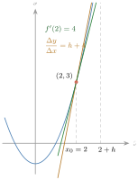

ជំពូកទី 3 ដេរីវេនៃអនុគមន៍ នៅក្នុងជំពូកនេះ ប្រើចំណេះដឹង និងបំណិននៃដេរីវេដែលបានសិក្សានៅថ្នាក់ទី \(\displaystyle 11\) ក្នុងការគណនាដេរីវេនៃអនុគមន៍ អនុគមន៍បណ្ដាក់ អនុគមន៍ត្រីកោណមាត្រ លើសពីនេះទៀត គេអាចប្រើចំណេះដឹង និងបំណិនទាំងអស់នេះក្នុងការអនុវត្ត ដើម្បីដោះស្រាយចំណោទបញ្ហាដែលពួកគេនឹងជួបប្រទះដូចជា ការគណនាតម្លៃអតិបរមានិងតម្លៃអប្បបរមា ការគណនាល្បឿននិងសំទុះនៃចលនាជាដើម ។
- គណនាដេរីវេនៃអនុគមន៍
- គណនាដេរីវេទី \(\displaystyle 2\) និងដេរីវេលំដាប់ខ្ពស់នៃអនុគមន៍ ។
1. ដេរីវេនៃអនុគមន៍ត្រង់ x₀
ដេរីវេត្រង់ \(\displaystyle x_0\) នៃអនុគមន៍ \(\displaystyle y = f(x)\) ជាលីមីត (បើមាន) នៃផលធៀបកំណើន \(\displaystyle \dfrac{\Delta y}{\Delta x}\) កាលណា \(\displaystyle \Delta x\) ខិតទៅជិត \(\displaystyle 0\) ។ គេសរសេរ
ឧទាហរណ៍ : រកដេរីវេត្រង់ \(\displaystyle x_0 = 2\) នៃអនុគមន៍ \(\displaystyle y = x^2 - 1\) ។
គេបាន \(\displaystyle \dfrac{\Delta y}{\Delta x} = \dfrac{f(2 + h) - f(2)}{h} = \dfrac{(2 + h)^2 - 1 - (2^2 - 1)}{h} = h + 4\) ។ ដូច្នេះ \(\displaystyle f'(2) = \displaystyle\lim_{\Delta x \to 0}\dfrac{\Delta y}{\Delta x} = \lim_{h \to 0}(h + 4) = 4\) ។

ក. រកដេរីវេនៃអនុគមន៍ \(\displaystyle y = 3x^3 + x\) ត្រង់ \(\displaystyle x = 1\) ។ ខ. រកដេរីវេនៃអនុគមន៍ \(\displaystyle y = \dfrac13x^3 - x + 2\) ត្រង់ \(\displaystyle x = 0\) ។
មើលចម្លើយ
ក. \(\displaystyle \dfrac{f(1 + h) - f(1)}{h} = \dfrac{3(1 + h)^3 + (1 + h) - 4}{h} = 9 + 9h + 3h^2 + 1\) ដូច្នេះ \(\displaystyle f'(1) = 10\) ។ ខ. \(\displaystyle \dfrac{f(h) - f(0)}{h} = \dfrac{\frac13h^3 - h}{h} = \dfrac13h^2 - 1 \to -1\) ដូច្នេះ \(\displaystyle f'(0) = -1\) ។ (សម្គាល់ ៖ សៀវភៅបោះពុម្ពចម្លើយ ក. ថា \(\displaystyle f'(1) = 7\) ដែលត្រូវនឹង \(\displaystyle y = 3x^2 + x\) ។ ចំពោះ \(\displaystyle y = 3x^3 + x\) ចម្លើយត្រឹមត្រូវគឺ \(\displaystyle 10\) ។)
2. ដេរីវេនៃអនុគមន៍បណ្ដាក់
ឧទាហរណ៍ : សហគ្រាសផលិតសម្ភារៈប្រើប្រាស់មួយ បានចំណាយប្រាក់ចំនួន \(\displaystyle 18\) ពាន់រៀល ក្នុងការផលិតសម្ភារៈមួយគ្រឿង ហើយរយៈពេល \(\displaystyle 1\text{h}\) សហគ្រាសផលិតសម្ភារៈបានចំនួន \(\displaystyle 40\) គ្រឿង ។
គេបានអត្រាបម្រែបម្រួលនៃប្រាក់ចំណាយសរុបក្នុងរយៈពេល \(\displaystyle 1\text{h}\) គឺ \(\displaystyle (18\ \text{ពាន់រៀលក្នុង}\ 1\ \text{គ្រឿង}) \times (40\ \text{គ្រឿងក្នុង}\ 1\text{h}) = 720\) ពាន់រៀល ។ ដូច្នេះ បម្រែបម្រួលមធ្យមនៃប្រាក់ចំណាយមានអត្រា \(\displaystyle 720\) ពាន់រៀលក្នុង \(\displaystyle 1\text{h}\) ។
បើ \(\displaystyle x\) ជាបរិមាណសម្ភារៈដែលបានផលិត ហើយ \(\displaystyle t\) ជារយៈពេលគិតជាម៉ោង នោះក្នុងករណីខាងលើ គេបានប្រាក់ចំណាយជាអនុគមន៍នៃបរិមាណសម្ភារៈ \(\displaystyle y = f(x)\) និងបរិមាណសម្ភារៈជាអនុគមន៍នៃរយៈពេល \(\displaystyle x = g(t)\) ។ គេបាន \(\displaystyle \dfrac{dy}{dt} = \dfrac{dy}{dx} \times \dfrac{dx}{dt}\) ដែល \(\displaystyle \dfrac{dy}{dt}\) ជាអត្រាបម្រែបម្រួលនៃប្រាក់ចំណាយក្នុង \(\displaystyle 1\text{h}\), \(\displaystyle \dfrac{dy}{dx}\) ជាអត្រាបម្រែបម្រួលនៃប្រាក់ចំណាយក្នុង \(\displaystyle 1\) គ្រឿង, \(\displaystyle \dfrac{dx}{dt}\) ជាអត្រាបម្រែបម្រួលនៃបរិមាណសម្ភារៈផលិតបានក្នុង \(\displaystyle 1\text{h}\) ។
បើ \(\displaystyle y = f(u)\) និង \(\displaystyle u = g(x)\) នោះ \(\displaystyle \dfrac{dy}{dx} = \dfrac{dy}{du} \times \dfrac{du}{dx}\) ឬ \(\displaystyle \dfrac{d}{dx}f[u(x)] = f'(u) \times u'(x)\) ដែលត្រូវមាន \(\displaystyle \dfrac{dy}{du}\) និង \(\displaystyle \dfrac{du}{dx}\) ។
សម្រាយបញ្ជាក់ គេឱ្យ \(\displaystyle F(x) = f[g(x)]\) ដោយប្រើភាពមានដេរីវេត្រង់ \(\displaystyle x = c\) គេត្រូវបង្ហាញថា \(\displaystyle F'(c) = f'[g(c)] \times g'(c)\) ។ តាមនិយមន័យ
គេឱ្យអនុគមន៍ \(\displaystyle y = (5x + 1)^3\) ។ គណនា \(\displaystyle \dfrac{dy}{dx}\) ។
តាង \(\displaystyle u = 5x + 1\) នោះ \(\displaystyle y = u^3\) ។ គេបាន \(\displaystyle \dfrac{du}{dx} = 5\) និង \(\displaystyle \dfrac{dy}{du} = 3u^2\) ។ \(\displaystyle \dfrac{dy}{dx} = \dfrac{dy}{du} \times \dfrac{du}{dx} = 3u^2 \times 5 = 15u^2\) ។ ជំនួស \(\displaystyle u = 5x + 1\) គេបាន \(\displaystyle \dfrac{dy}{dx} = 15(5x + 1)^2\) ។
គណនាដេរីវេនៃអនុគមន៍ខាងក្រោម ៖ ក. \(\displaystyle y = \sqrt{x^2 - 1}\) ខ. \(\displaystyle y = \dfrac{1}{(x^2 + 3x + 1)^2}\) ។
មើលចម្លើយ
ក. \(\displaystyle \dfrac{dy}{dx} = \dfrac{x}{\sqrt{x^2 - 1}}\) ខ. \(\displaystyle \dfrac{dy}{dx} = \dfrac{-2(2x + 3)}{(x^2 + 3x + 1)^3}\) ។
ឧទាហរណ៍ : គេឱ្យអនុគមន៍ \(\displaystyle y = (3x^2 + 5x - 2)^3\) ។ តាង \(\displaystyle u = 3x^2 + 5x - 2\) នោះ \(\displaystyle y = u^3\) ។ គេបាន \(\displaystyle \dfrac{du}{dx} = 6x + 5\) និង \(\displaystyle \dfrac{dy}{du} = 3u^2\) ។ \(\displaystyle \dfrac{dy}{dx} = \dfrac{dy}{du} \times \dfrac{du}{dx} = 3u^2 \times (6x + 5) = 3(3x^2 + 5x - 2)^2(6x + 5)\) ។ ដូច្នេះ \(\displaystyle \dfrac{dy}{dx} = 3(3x^2 + 5x - 2)^2(6x + 5)\) ។
បើ \(\displaystyle y = u^n\) ដែល \(\displaystyle u\) ជាអនុគមន៍នៃ \(\displaystyle x\) នោះ \(\displaystyle \dfrac{dy}{dx} = nu^{n - 1} \times \dfrac{du}{dx} = nu^{n - 1} \times u'\) ។
សម្រាយបញ្ជាក់ គេមាន \(\displaystyle y = u^n\) ។ គេបាន \(\displaystyle \dfrac{dy}{dx} = \dfrac{dy}{du} \times \dfrac{du}{dx} = \dfrac{d}{du}(u^n) \times \dfrac{du}{dx} = nu^{n - 1} \times \dfrac{du}{dx}\) ។
វិបាក ករណី \(\displaystyle n = \dfrac12\) គេបាន \(\displaystyle \dfrac{dy}{dx} = \dfrac12u^{\frac12 - 1} \times u' = \dfrac{u'}{2\sqrt u}\) ។ ដូច្នេះ \(\displaystyle \dfrac{dy}{dx} = \dfrac{u'}{2\sqrt u}\) ។
គណនាដេរីវេនៃអនុគមន៍ \(\displaystyle y = (x^2 - 4x)^6\) ។
តាង \(\displaystyle u = x^2 - 4x\) នោះ \(\displaystyle y = u^6\) ។ គេបាន \(\displaystyle y' = 6u^5 \times u' = 6(x^2 - 4x)^5 \times (x^2 - 4x)' = 6(x^2 - 4x)^5 \times (2x - 4) = 12(x - 2)(x^2 - 4x)^5\) ។
គណនាដេរីវេនៃអនុគមន៍ \(\displaystyle y = 3\sqrt[3]{x^2 - 3x + 1}\) ។
គេអាចសរសេរ \(\displaystyle y = 3\sqrt[3]{x^2 - 3x + 1} = 3(x^2 - 3x + 1)^{\frac13}\) ។ តាង \(\displaystyle u = x^2 - 3x + 1\) នោះ \(\displaystyle y = 3u^{\frac13}\) ។ គេបាន \(\displaystyle y' = 3 \times \dfrac13u^{-\frac23} \times u' = (x^2 - 3x + 1)^{-\frac23} \times (2x - 3) = \dfrac{2x - 3}{(x^2 - 3x + 1)^{\frac23}}\) ។ ដូច្នេះ \(\displaystyle y' = \dfrac{2x - 3}{\sqrt[3]{(x^2 - 3x + 1)^2}}\) ។
គណនាដេរីវេនៃអនុគមន៍ ៖ ក. \(\displaystyle f(x) = (x^2 + 8x)^{10}\) ខ. \(\displaystyle f(x) = 6\sqrt[3]{2x + 5}\) គ. \(\displaystyle f(x) = (3x^4 - 1)^5\) ។
មើលចម្លើយ
ក. \(\displaystyle f'(x) = 20(x + 4)(x^2 + 8x)^9\) ខ. \(\displaystyle f'(x) = \dfrac{4}{\sqrt[3]{(2x + 5)^2}}\) គ. \(\displaystyle f'(x) = 60x^3(3x^4 - 1)^4\) ។
3. ដេរីវេនៃអនុគមន៍ត្រីកោណមាត្រ
3.1. ដេរីវេនៃអនុគមន៍ស៊ីនុសនិងកូស៊ីនុស
ឧទាហរណ៍ 1 : គេឱ្យអនុគមន៍ \(\displaystyle y = \sin x\) កំណត់ចំពោះគ្រប់ \(\displaystyle x \in \mathbb{R}\) ។ គេបាន \(\displaystyle y' = \displaystyle\lim_{h \to 0}\dfrac{\sin(x + h) - \sin x}{h}\) ប្រើសមភាព \(\displaystyle \sin p - \sin q = 2\sin\left(\dfrac{p - q}{2}\right)\cos\left(\dfrac{p + q}{2}\right)\)
ដូច្នេះ \(\displaystyle y' = \cos x\) ។
ឧទាហរណ៍ 2 : គេឱ្យ \(\displaystyle f(x) = \cos x\) កំណត់ចំពោះគ្រប់ \(\displaystyle x \in \mathbb{R}\) ។ គេបាន \(\displaystyle f'(x) = \displaystyle\lim_{h \to 0}\dfrac{\cos(x + h) - \cos x}{h}\) ប្រើសមភាព \(\displaystyle \cos p - \cos q = -2\sin\left(\dfrac{p - q}{2}\right)\sin\left(\dfrac{p + q}{2}\right)\)
ដូច្នេះ \(\displaystyle f'(x) = -\sin x\) ។
ឧទាហរណ៍ 3 : គេឱ្យ \(\displaystyle y = \sin(x^2 - 3)\) ។ តាង \(\displaystyle u = x^2 - 3\) នោះ \(\displaystyle y = \sin u\) ។ គេបាន \(\displaystyle \dfrac{du}{dx} = 2x\) និង \(\displaystyle \dfrac{dy}{du} = \cos u\) ។ \(\displaystyle \dfrac{dy}{dx} = \dfrac{dy}{du} \times \dfrac{du}{dx} = 2x \times \cos u = 2x\cos(x^2 - 3)\) ។ ដូច្នេះ \(\displaystyle y' = 2x\cos(x^2 - 3)\) ។
- បើ \(\displaystyle y = \sin x\) នោះ \(\displaystyle y' = \cos x\)
- បើ \(\displaystyle y = \cos x\) នោះ \(\displaystyle y' = -\sin x\)
- បើ \(\displaystyle y = \sin u\) នោះ \(\displaystyle y' = u'\cos u\) ដោយ \(\displaystyle u\) ជាអនុគមន៍នៃ \(\displaystyle x\)
- បើ \(\displaystyle y = \cos u\) នោះ \(\displaystyle y' = -u'\sin u\) ។
គណនាដេរីវេនៃអនុគមន៍ចំពោះគ្រប់ \(\displaystyle x \in \mathbb{R}\) ៖ ក. \(\displaystyle f(x) = \sin x - x\cos x\) ខ. \(\displaystyle f(x) = \cos^2x + x\sin x\) ។
ក. \(\displaystyle f(x) = \sin x - x\cos x\) ដោយ \(\displaystyle (u + v)' = u' + v'\), \(\displaystyle (uv)' = u'v + v'u\) ។ គេបាន \(\displaystyle f'(x) = \cos x - [(x)'\cos x + x(\cos x)'] = \cos x - (\cos x - x\sin x) = x\sin x\) ។ ដូច្នេះ \(\displaystyle f'(x) = x\sin x\) ។
ខ. \(\displaystyle f(x) = \cos^2x + x\sin x\) តាមរូបមន្ត \(\displaystyle (u^n)' = nu^{n - 1} \times u'\), \(\displaystyle (u + v)' = u' + v'\), \(\displaystyle (uv)' = u'v + v'u\) ។ គេបាន \(\displaystyle f'(x) = 2\cos x(\cos x)' + [x'\sin x + x(\sin x)'] = -2\cos x\sin x + \sin x + x\cos x = -\sin2x + \sin x + x\cos x\) ។ ដូច្នេះ \(\displaystyle f'(x) = -\sin2x + \sin x + x\cos x\) ។
គណនាដេរីវេនៃអនុគមន៍ខាងក្រោម ៖ ក. \(\displaystyle f(x) = -3x^4 + \sin(2x^3 - 1)\) ខ. \(\displaystyle f(x) = x^2\cos(3x + 1)\) ។
ក. តាមរូបមន្ត \(\displaystyle (x^n)' = nx^{n - 1}\), \(\displaystyle (\sin u)' = u'\cos u\) គេបាន \(\displaystyle f'(x) = -12x^3 + (2x^3 - 1)'\cos(2x^3 - 1) = -12x^3 + 6x^2\cos(2x^3 - 1)\) ។ ដូច្នេះ \(\displaystyle f'(x) = -12x^3 + 6x^2\cos(2x^3 - 1)\) ។
ខ. តាមរូបមន្ត \(\displaystyle (uv)' = u'v + v'u\), \(\displaystyle (\cos u)' = (-u')\sin u\) គេបាន \(\displaystyle f'(x) = (x^2)'\cos(3x + 1) + x^2[\cos(3x + 1)]' = 2x\cos(3x + 1) + x^2 \times [-3\sin(3x + 1)] = 2x\cos(3x + 1) - 3x^2\sin(3x + 1)\) ។
គណនាដេរីវេនៃអនុគមន៍ខាងក្រោម ៖ ក. \(\displaystyle f(x) = x^3\cos x + 2\sin x\) ខ. \(\displaystyle f(x) = \cos(5x^4 - 3) + x\sin2x\) ។
មើលចម្លើយ
ក. \(\displaystyle f'(x) = 3x^2\cos x - x^3\sin x + 2\cos x\) ខ. \(\displaystyle f'(x) = -20x^3\sin(5x^4 - 3) + \sin2x + 2x\cos2x\) ។
3.2. ដេរីវេនៃអនុគមន៍តង់ហ្សង់និងកូតង់ហ្សង់
ឧទាហរណ៍ 1 : គេឱ្យ \(\displaystyle y = \tan x\) ចំពោះ \(\displaystyle x \ne \dfrac\pi2 + k\pi\), \(\displaystyle k \in \mathbb{Z}\) ។ គេអាចសរសេរ \(\displaystyle y = \dfrac{\sin x}{\cos x}\)
ដូច្នេះ \(\displaystyle y' = \dfrac{1}{\cos^2x} = 1 + \tan^2x\) ។
ឧទាហរណ៍ 2 : គេឱ្យ \(\displaystyle f(x) = \cot x\) ចំពោះ \(\displaystyle x \ne k\pi\), \(\displaystyle k \in \mathbb{Z}\) ។ គេអាចសរសេរ \(\displaystyle f(x) = \dfrac{\cos x}{\sin x}\)
ដូច្នេះ \(\displaystyle f'(x) = -\dfrac{1}{\sin^2x} = -(1 + \cot^2x)\) ។
ឧទាហរណ៍ 3 : គេឱ្យ \(\displaystyle y = \tan(3x^2 - 5)\) ។ តាង \(\displaystyle u = 3x^2 - 5\) នោះ \(\displaystyle y = \tan u\) ។ គេបាន \(\displaystyle \dfrac{du}{dx} = 6x\) និង \(\displaystyle \dfrac{dy}{du} = \dfrac{1}{\cos^2u} = 1 + \tan^2u\) ។ \(\displaystyle \dfrac{dy}{dx} = \dfrac{dy}{du} \times \dfrac{du}{dx} = 6x \times \dfrac{1}{\cos^2u} = 6x \times \dfrac{1}{\cos^2(3x^2 - 5)}\) ។
- បើ \(\displaystyle y = \tan x\) នោះ \(\displaystyle y' = \dfrac{1}{\cos^2x} = 1 + \tan^2x\)
- បើ \(\displaystyle y = \cot x\) នោះ \(\displaystyle y' = -\dfrac{1}{\sin^2x} = -(1 + \cot^2x)\)
- បើ \(\displaystyle y = \tan u\) នោះ \(\displaystyle y' = \dfrac{u'}{\cos^2u} = u'(1 + \tan^2u)\) ដោយ \(\displaystyle u\) ជាអនុគមន៍នៃ \(\displaystyle x\)
- បើ \(\displaystyle y = \cot u\) នោះ \(\displaystyle y' = -\dfrac{u'}{\sin^2u} = -u'(1 + \cot^2u)\) ។
រកដេរីវេនៃអនុគមន៍ខាងក្រោម ៖ ក. \(\displaystyle f(x) = x^3\tan x\) ខ. \(\displaystyle f(x) = (2 + \cot x)^3\) ។
ក. \(\displaystyle f(x) = x^3\tan x\) តាមរូបមន្ត \(\displaystyle (uv)' = u'v + v'u\) គេបាន \(\displaystyle f'(x) = (x^3)'\tan x + x^3(\tan x)' = 3x^2\tan x + \dfrac{x^3}{\cos^2x}\) ។
ខ. \(\displaystyle f(x) = (2 + \cot x)^3\) តាមរូបមន្ត \(\displaystyle (u^n)' = nu^{n - 1} \times u'\) គេបាន \(\displaystyle f'(x) = 3(2 + \cot x)^2(2 + \cot x)' = 3(2 + \cot x)^2\left(-\dfrac{1}{\sin^2x}\right)\) ។ ដូច្នេះ \(\displaystyle f'(x) = -\dfrac{3(2 + \cot x)^2}{\sin^2x}\) ។
គណនាដេរីវេនៃអនុគមន៍ខាងក្រោម ៖ ក. \(\displaystyle f(x) = 3x^2 + \tan(x^3 - 1)\) ខ. \(\displaystyle f(x) = x\cot(5x^3 + 7)\) ។
ក. តាមរូបមន្ត \(\displaystyle (\tan u)' = \dfrac{u'}{\cos^2u}\) គេបាន \(\displaystyle f'(x) = 6x + \dfrac{(x^3 - 1)'}{\cos^2(x^3 - 1)} = 6x + \dfrac{3x^2}{\cos^2(x^3 - 1)}\) ។
ខ. តាមរូបមន្ត \(\displaystyle (uv)' = u'v + v'u\), \(\displaystyle (\cot u)' = -\dfrac{u'}{\sin^2u}\) គេបាន \(\displaystyle f'(x) = \cot(5x^3 + 7) + x[\cot(5x^3 + 7)]' = \cot(5x^3 + 7) + x \times \left[-\dfrac{15x^2}{\sin^2(5x^3 + 7)}\right]\) ។ ដូច្នេះ \(\displaystyle f'(x) = \cot(5x^3 + 7) - \dfrac{15x^3}{\sin^2(5x^3 + 7)}\) ។
រកដេរីវេនៃអនុគមន៍ខាងក្រោម ៖ ក. \(\displaystyle f(x) = 3x^2\tan^3x\) ខ. \(\displaystyle f(x) = (1 + \tan x)^2\) គ. \(\displaystyle f(x) = 3\cot(x^4 - 3)\) ឃ. \(\displaystyle f(x) = x\tan(2x^2 - 3)\) ។
មើលចម្លើយ
ក. \(\displaystyle f'(x) = 6x\tan^3x + 9x^2\tan^2x(1 + \tan^2x)\) ខ. \(\displaystyle f'(x) = 2(1 + \tan x)(1 + \tan^2x)\) គ. \(\displaystyle f'(x) = -12x^3[1 + \cot^2(x^4 - 3)]\) ឃ. \(\displaystyle f'(x) = \tan(2x^2 - 3) + \dfrac{4x^2}{\cos^2(2x^2 - 3)}\) ។
4. ដេរីវេនៃអនុគមន៍ច្រាសត្រីកោណមាត្រ
4.1. ដេរីវេនៃអនុគមន៍ច្រាសស៊ីនុសនិងកូស៊ីនុស
គេមានអនុគមន៍ពីរ \(\displaystyle f(x)\) និង \(\displaystyle g(x)\) ជាអនុគមន៍ច្រាសគ្នា នោះគេបាន \(\displaystyle f[g(x)] = x\) និង \(\displaystyle g[f(x)] = x\) ហើយនិង \(\displaystyle g'(x) = \dfrac{1}{f'[g(x)]}\) ដែល \(\displaystyle f'[g(x)] \ne 0\) ។
ឧទាហរណ៍ : គេមានអនុគមន៍ \(\displaystyle y = \sin^{-1}x\) សមមូល \(\displaystyle \sin y = x\) ចំពោះ \(\displaystyle -\dfrac\pi2 \le y \le \dfrac\pi2\) នោះ \(\displaystyle -1 \le x \le 1\) ។ តាង \(\displaystyle f(x) = \sin x\) និង \(\displaystyle g(x) = \sin^{-1}x\) នោះគេបាន \(\displaystyle g'(x) = \dfrac{1}{f'[g(x)]} = \dfrac{1}{\cos(\sin^{-1}x)}\) (1) ។ ដោយ \(\displaystyle y = \sin^{-1}x\) នាំឱ្យ \(\displaystyle \cos(\sin^{-1}x) = \cos y\) ។ តាមលក្ខណៈ \(\displaystyle \cos^2y + \sin^2y = 1 \Rightarrow \cos y = \sqrt{1 - \sin^2y}\) (ព្រោះ \(\displaystyle \cos y \ge 0\) ចំពោះ \(\displaystyle -\dfrac\pi2 \le y \le \dfrac\pi2\)) នាំឱ្យ \(\displaystyle \cos(\sin^{-1}x) = \cos y = \sqrt{1 - \sin^2y} = \sqrt{1 - x^2}\) ។ តាម (1) គេបាន \(\displaystyle g'(x) = \dfrac{d}{dx}(\sin^{-1}x) = \dfrac{1}{\sqrt{1 - x^2}}\) ។
\(\displaystyle \dfrac{d}{dx}(\sin^{-1}x) = \dfrac{1}{\sqrt{1 - x^2}}\) (\(\displaystyle -1 < x < 1\)) ។
គណនាដេរីវេនៃអនុគមន៍ខាងក្រោម ៖ ក. \(\displaystyle y = x^2 + \sin^{-1}x\) ខ. \(\displaystyle y = \ln2x - 3\sin^{-1}x\) ។
ក. \(\displaystyle y' = (x^2 + \sin^{-1}x)' = (x^2)' + (\sin^{-1}x)' = 2x + \dfrac{1}{\sqrt{1 - x^2}}\) ។
ខ. \(\displaystyle y' = (\ln2x - 3\sin^{-1}x)' = (\ln2x)' - 3(\sin^{-1}x)' = \dfrac1x - \dfrac{3}{\sqrt{1 - x^2}}\) ។
គណនាដេរីវេនៃអនុគមន៍ខាងក្រោម ៖ ក. \(\displaystyle y = 2x^2 + 4\sin^{-1}x\) ខ. \(\displaystyle y = 5\ln\left(\dfrac12\right) + 6\sin^{-1}x\) ។
មើលចម្លើយ
ក. \(\displaystyle y' = 4x + \dfrac{4}{\sqrt{1 - x^2}}\) ខ. \(\displaystyle y' = \dfrac{6}{\sqrt{1 - x^2}}\) ។ (សម្គាល់ ៖ សៀវភៅបោះពុម្ពចម្លើយ ខ. ជា \(\displaystyle -\dfrac5x + \dfrac{6}{\sqrt{1 - x^2}}\) ដែលត្រូវនឹងអនុគមន៍ \(\displaystyle y = 5\ln\dfrac1x + 6\sin^{-1}x\) ។ ចំពោះ \(\displaystyle y = 5\ln\dfrac12 + 6\sin^{-1}x\) ដូចដែលបោះពុម្ព \(\displaystyle 5\ln\dfrac12\) ជាចំនួនថេរ ដេរីវេស្មើ \(\displaystyle 0\) ។)
ឧទាហរណ៍ : គេឱ្យអនុគមន៍ \(\displaystyle y = \cos^{-1}x\) សមមូល \(\displaystyle \cos y = x\) ចំពោះ \(\displaystyle 0 \le y \le \pi\) នោះ \(\displaystyle -1 \le x \le 1\) ។ តាង \(\displaystyle f(x) = \cos x\) និង \(\displaystyle g(x) = \cos^{-1}x\) ។ គេបាន \(\displaystyle g'(x) = \dfrac{1}{f'[g(x)]} = \dfrac{1}{-\sin(\cos^{-1}x)}\) ។ សម្រាយដូចគ្នានឹងអនុគមន៍ច្រាសស៊ីនុសគេបាន \(\displaystyle g'(x) = \dfrac{d}{dx}(\cos^{-1}x) = -\dfrac{1}{\sqrt{1 - x^2}}\) ។
\(\displaystyle \dfrac{d}{dx}(\cos^{-1}x) = -\dfrac{1}{\sqrt{1 - x^2}}\) (\(\displaystyle -1 < x < 1\)) ។
គណនាដេរីវេនៃអនុគមន៍ខាងក្រោម ៖ ក. \(\displaystyle y = 3e^{2x} - \cos^{-1}x\) ខ. \(\displaystyle y = x\cos^{-1}x\) គ. \(\displaystyle y = \dfrac{\cos^{-1}x}{x}\) ។
ក. \(\displaystyle y' = (3e^{2x} - \cos^{-1}x)' = (3e^{2x})' - (\cos^{-1}x)' = 6e^{2x} + \dfrac{1}{\sqrt{1 - x^2}}\) ។
ខ. \(\displaystyle y' = (x\cos^{-1}x)' = x'\cos^{-1}x + (\cos^{-1}x)'x = \cos^{-1}x - \dfrac{x}{\sqrt{1 - x^2}}\) ។
គ. \(\displaystyle y' = \left(\dfrac{\cos^{-1}x}{x}\right)' = \dfrac{(\cos^{-1}x)'x - x'\cos^{-1}x}{x^2} = \dfrac{-\frac{x}{\sqrt{1 - x^2}} - \cos^{-1}x}{x^2} = \dfrac{-\left(x + \sqrt{1 - x^2}\cos^{-1}x\right)}{x^2\sqrt{1 - x^2}}\) ។
គណនាដេរីវេនៃអនុគមន៍ខាងក្រោម ៖ ក. \(\displaystyle y = \dfrac14e^{2x} + 3\cos^{-1}x\) ខ. \(\displaystyle y = 6x^2\cos^{-1}x\) គ. \(\displaystyle y = \dfrac{1}{\cos^{-1}x}\) ។
មើលចម្លើយ
ក. \(\displaystyle y' = \dfrac12e^{2x} - \dfrac{3}{\sqrt{1 - x^2}}\) ខ. \(\displaystyle y' = 12x\cos^{-1}x - \dfrac{6x^2}{\sqrt{1 - x^2}}\) គ. \(\displaystyle y' = \dfrac{1}{\sqrt{1 - x^2}\,(\cos^{-1}x)^2}\) ។
4.2. ដេរីវេនៃអនុគមន៍ច្រាសតង់ហ្សង់និងកូតង់ហ្សង់
ឧទាហរណ៍ : គេមានអនុគមន៍ \(\displaystyle y = \tan^{-1}x\) សមមូល \(\displaystyle \tan y = x\) ចំពោះ \(\displaystyle -\dfrac\pi2 \le y \le \dfrac\pi2\) ។ តាង \(\displaystyle f(x) = \tan x\) និង \(\displaystyle g(x) = \tan^{-1}x\) នោះគេបាន \(\displaystyle g'(x) = \dfrac{1}{f'[g(x)]}\) ដោយ \(\displaystyle f'(x) = \dfrac{1}{\cos^2x}\) នាំឱ្យ \(\displaystyle g'(x) = \dfrac{1}{\frac{1}{\cos^2(\tan^{-1}x)}}\) ឬ \(\displaystyle g'(x) = \cos^2(\tan^{-1}x)\) ។ ដោយ \(\displaystyle \cos^2(\tan^{-1}x) = \cos^2y\) តាមលក្ខណៈ \(\displaystyle \cos^2y + \sin^2y = 1\) (ចែកអង្គទាំងពីរនឹង \(\displaystyle \cos^2y\)) គេបាន \(\displaystyle 1 + \tan^2y = \dfrac{1}{\cos^2y}\) នាំឱ្យ \(\displaystyle \cos^2y = \dfrac{1}{1 + \tan^2y} = \dfrac{1}{1 + x^2}\) ។ ដូច្នេះ \(\displaystyle g'(x) = \dfrac{d}{dx}(\tan^{-1}x) = \dfrac{1}{1 + x^2}\) ។
\(\displaystyle \dfrac{d}{dx}(\tan^{-1}x) = \dfrac{1}{1 + x^2}\) ។
គណនាដេរីវេនៃអនុគមន៍ខាងក្រោម ៖ ក. \(\displaystyle y = 4\sin^{-1}x - 10\tan^{-1}x\) ខ. \(\displaystyle y = x\tan^{-1}x\) ។
ក. \(\displaystyle y' = (4\sin^{-1}x - 10\tan^{-1}x)' = \dfrac{4}{\sqrt{1 - x^2}} - \dfrac{10}{1 + x^2}\) ។
ខ. \(\displaystyle y' = (x\tan^{-1}x)' = x'\tan^{-1}x + (\tan^{-1}x)'x = \tan^{-1}x + \dfrac{x}{1 + x^2}\) ។
គណនាដេរីវេនៃអនុគមន៍ខាងក្រោម ៖ ក. \(\displaystyle y = 2\sin^{-1}x + 16\tan^{-1}x\) ខ. \(\displaystyle y = \sin x + x^2\tan^{-1}x\) ។
មើលចម្លើយ
ក. \(\displaystyle y' = \dfrac{2}{\sqrt{1 - x^2}} + \dfrac{16}{1 + x^2}\) ខ. \(\displaystyle y' = \cos x + 2x\tan^{-1}x + \dfrac{x^2}{1 + x^2}\) ។
ឧទាហរណ៍ : គេមានអនុគមន៍ \(\displaystyle y = \cot^{-1}x\) សមមូល \(\displaystyle \cot y = x\) ។ តាង \(\displaystyle f(x) = \cot x\) និង \(\displaystyle g(x) = \cot^{-1}x\) នោះគេបាន \(\displaystyle g'(x) = \dfrac{1}{f'[g(x)]}\) ដោយ \(\displaystyle f'(x) = -\dfrac{1}{\sin^2x}\) នាំឱ្យ \(\displaystyle g'(x) = -\dfrac{1}{\sin^{-2}(\cot^{-1}x)} = -\sin^2(\cot^{-1}x)\) ដោយ \(\displaystyle \sin^2(\cot^{-1}x) = \sin^2y\) តាមលក្ខណៈ \(\displaystyle \cos^2y + \sin^2y = 1\) (ចែកអង្គទាំងពីរនឹង \(\displaystyle \sin^2y\)) គេបាន \(\displaystyle \cot^2y + 1 = \dfrac{1}{\sin^2y}\) នាំឱ្យ \(\displaystyle \sin^2(\cot^{-1}x) = \dfrac{1}{1 + \cot^2y} = \dfrac{1}{1 + x^2}\) ។ ដូច្នេះ \(\displaystyle \dfrac{d}{dx}(\cot^{-1}x) = -\dfrac{1}{1 + x^2}\) ។
\(\displaystyle \dfrac{d}{dx}(\cot^{-1}x) = -\dfrac{1}{1 + x^2}\) ។
គណនាដេរីវេនៃអនុគមន៍ខាងក្រោម ៖ ក. \(\displaystyle y = x\cot^{-1}x\) ខ. \(\displaystyle y = \cos^{-1}x + 20\cot^{-1}x\) ។
ក. \(\displaystyle y' = (x\cot^{-1}x)' = x'\cot^{-1}x + (\cot^{-1}x)'x = \cot^{-1}x - \dfrac{x}{1 + x^2}\) ។
ខ. \(\displaystyle y' = (\cos^{-1}x)' + 20(\cot^{-1}x)' = -\dfrac{1}{\sqrt{1 - x^2}} - \dfrac{20}{1 + x^2}\) ។
គណនាដេរីវេនៃអនុគមន៍ខាងក្រោម ៖ ក. \(\displaystyle y = x^2\cot^{-1}x\) ខ. \(\displaystyle y = 2x\cot^{-1}x - \sin^{-1}x\) ។
មើលចម្លើយ
ក. \(\displaystyle y' = 2x\cot^{-1}x - \dfrac{x^2}{1 + x^2}\) ខ. \(\displaystyle y' = 2\cot^{-1}x - \dfrac{2x}{1 + x^2} - \dfrac{1}{\sqrt{1 - x^2}}\) ។
បើ \(\displaystyle u\) ជាអនុគមន៍នៃ \(\displaystyle x\)
- \(\displaystyle \dfrac{d}{dx}(\sin^{-1}u) = \dfrac{u'}{\sqrt{1 - u^2}}\)
- \(\displaystyle \dfrac{d}{dx}(\cos^{-1}u) = -\dfrac{u'}{\sqrt{1 - u^2}}\)
- \(\displaystyle \dfrac{d}{dx}(\tan^{-1}u) = \dfrac{u'}{1 + u^2}\)
- \(\displaystyle \dfrac{d}{dx}(\cot^{-1}u) = -\dfrac{u'}{1 + u^2}\) ។
គណនាដេរីវេនៃអនុគមន៍ខាងក្រោម ៖ ក. \(\displaystyle y = 4\sin^{-1}3x + \tan^{-1}5x\) ខ. \(\displaystyle y = 10\cos^{-1}2x - 7\cot^{-1}4x\) ។
ក. \(\displaystyle y' = 4 \cdot \dfrac{(3x)'}{\sqrt{1 - (3x)^2}} + \dfrac{(5x)'}{1 + (5x)^2} = \dfrac{12}{\sqrt{1 - 9x^2}} + \dfrac{5}{1 + 25x^2}\) ។
ខ. \(\displaystyle y' = 10\left[-\dfrac{(2x)'}{\sqrt{1 - (2x)^2}}\right] - 7\left[-\dfrac{(4x)'}{1 + (4x)^2}\right] = -\dfrac{20}{\sqrt{1 - 4x^2}} + \dfrac{28}{1 + 16x^2}\) ។
គណនាដេរីវេនៃអនុគមន៍ខាងក្រោម ៖ ក. \(\displaystyle y = \dfrac13\cos^{-1}7x + 2\tan^{-1}8x\) ខ. \(\displaystyle y = x\sin^{-1}x + 6\cot^{-1}9x\) ។
មើលចម្លើយ
ក. \(\displaystyle y' = -\dfrac{7}{3\sqrt{1 - 49x^2}} + \dfrac{16}{1 + 64x^2}\) ខ. \(\displaystyle y' = \sin^{-1}x + \dfrac{x}{\sqrt{1 - x^2}} - \dfrac{54}{1 + 81x^2}\) ។
5. ដេរីវេលំដាប់ខ្ពស់
5.1. ដេរីវេទី 2 នៃអនុគមន៍
ឧទាហរណ៍ 1 : គេឱ្យអនុគមន៍ \(\displaystyle f(x) = x^4 - 3x^2 + 1\) ។ គេបាន \(\displaystyle f'(x) = 4x^3 - 6x\) ។ \(\displaystyle [f'(x)]' = f''(x) = 12x^2 - 6\) ។
ឧទាហរណ៍ 2 : គេឱ្យអនុគមន៍ \(\displaystyle y = x^3 + 3\sin2x\) ។ គេបាន \(\displaystyle y' = 3x^2 + 6\cos2x\) ។ \(\displaystyle [y']' = 6x - 12\sin2x = 6(x - 2\sin2x)\) ។
ដេរីវេទី \(\displaystyle 2\) នៃអនុគមន៍ \(\displaystyle y = f(x)\) កំណត់តាងដោយ \(\displaystyle y''\) ឬ \(\displaystyle f''(x)\) ឬ \(\displaystyle \dfrac{d^2y}{dx^2}\) ។
គណនា \(\displaystyle f'(x)\) និង \(\displaystyle f''(x)\) នៃអនុគមន៍ខាងក្រោម ៖ ក. \(\displaystyle f(x) = x^3 - 12x + 1\) ខ. \(\displaystyle f(x) = \dfrac{x^2}{x^2 - 9}\) ។
ក. \(\displaystyle f(x) = x^3 - 12x + 1\) គេបាន \(\displaystyle f'(x) = 3x^2 - 12\) នោះ \(\displaystyle f''(x) = 6x\) ។
ខ. \(\displaystyle f(x) = \dfrac{x^2}{x^2 - 9}\) គេបាន \(\displaystyle f'(x) = \dfrac{2x(x^2 - 9) - x^2 \cdot 2x}{(x^2 - 9)^2} = \dfrac{-18x}{(x^2 - 9)^2}\) ។
រក \(\displaystyle y'\) និង \(\displaystyle y''\) ជាអនុគមន៍នៃ \(\displaystyle x\) និង \(\displaystyle y\) ៖ ក. \(\displaystyle x^2 + y^2 = 4\) ខ. \(\displaystyle xy + y^2 - x^2 = 5\) ។
ក. រក \(\displaystyle y'\) នៃ \(\displaystyle x^2 + y^2 = 4\) ដេរីវេអង្គទាំងពីរ ៖ \(\displaystyle \dfrac{d}{dx}[x^2 + y^2] = \dfrac{d}{dx}[4]\) គឺ \(\displaystyle 2x + 2y\dfrac{dy}{dx} = 0\) ឬ \(\displaystyle 2x + 2yy' = 0\) (1) ។ ដូច្នេះ \(\displaystyle y' = -\dfrac xy\) បើ \(\displaystyle y \ne 0\) ។
រក \(\displaystyle y''\) ៖ តាម (1) \(\displaystyle x + yy' = 0\) ។ គេបាន \(\displaystyle 1 + y'y' + yy'' = 0\) នោះ \(\displaystyle y'' = \dfrac{-1 - (y')^2}{y}\) ។ ដោយ \(\displaystyle y' = -\dfrac xy\) ដូច្នេះ \(\displaystyle y'' = -\dfrac{x^2 + y^2}{y^3}\) (ហើយតាមសមីការ \(\displaystyle x^2 + y^2 = 4\) គេបាន \(\displaystyle y'' = -\dfrac{4}{y^3}\)) ។
ខ. រក \(\displaystyle y'\) នៃ \(\displaystyle xy + y^2 - x^2 = 5\) ដេរីវេអង្គទាំងពីរ ៖ \(\displaystyle \dfrac{d}{dx}[xy] + \dfrac{d}{dx}[y^2] - \dfrac{d}{dx}[x^2] = 0\) គឺ \(\displaystyle (y + xy') + 2yy' - 2x = 0\) (1) ។ ដូច្នេះ \(\displaystyle y + (x + 2y)y' - 2x = 0\) ហើយ \(\displaystyle y' = \dfrac{2x - y}{x + 2y}\) ។
រក \(\displaystyle y''\) ៖ តាម (1) គេបាន \(\displaystyle y' + y' + xy'' + 2y'y' + 2yy'' - 2 = 0\) ។ \(\displaystyle (x + 2y)y'' = 2 - 2y' - 2(y')^2\) ហើយ \(\displaystyle y'' = \dfrac{2 - 2y' - 2(y')^2}{x + 2y}\) ។ ជំនួស \(\displaystyle y' = \dfrac{2x - y}{x + 2y}\) គេបាន \(\displaystyle y'' = \dfrac{10(xy + y^2 - x^2)}{(x + 2y)^3}\) ដោយសារតែ \(\displaystyle y'' = \dfrac{2(x + 2y)^2 - 2(2x - y)(x + 2y) - 2(2x - y)^2}{(x + 2y)^3}\) ដែលចំនួនក្នុងភាគយក \(\displaystyle = 10(xy + y^2 - x^2)\) ។ តាមសមីការ \(\displaystyle xy + y^2 - x^2 = 5\) ដូច្នេះ \(\displaystyle y'' = \dfrac{50}{(x + 2y)^3}\) ។
គណនាដេរីវេទី \(\displaystyle 2\) នៃអនុគមន៍ខាងក្រោម ៖ ក. \(\displaystyle y = x^4 - 3x^2 + x^{-2}\) ខ. \(\displaystyle f(x) = \sin3x^2 + 1\) ។
មើលចម្លើយ
ក. \(\displaystyle y'' = 12x^2 - 6 + 6x^{-4}\) ខ. \(\displaystyle f''(x) = 6\cos(3x^2 + 1) - 36x^2\sin(3x^2 + 1)\) (បើអាន \(\displaystyle f(x) = \sin(3x^2 + 1)\)) ។ បើអានជា \(\displaystyle f(x) = \sin(3x^2) + 1\) នោះ \(\displaystyle f''(x) = 6\cos3x^2 - 36x^2\sin3x^2\) ។
រក \(\displaystyle y'\) និង \(\displaystyle y''\) ជាអនុគមន៍នៃ \(\displaystyle x\) និង \(\displaystyle y\) ៖ ក. \(\displaystyle xy + xy^2 = 2\) ខ. \(\displaystyle 4xy = x^2 + y^2\) ។
មើលចម្លើយ
ក. \(\displaystyle y' = -\dfrac{y(1 + y)}{x(1 + 2y)}\) ; \(\displaystyle y'' = \dfrac{2y(3y^3 + 6y^2 + 4y + 1)}{x^2(1 + 2y)^3}\) ។
ខ. \(\displaystyle y' = \dfrac{x - 2y}{2x - y}\) ; \(\displaystyle y'' = \dfrac{3(4xy - x^2 - y^2)}{(2x - y)^3}\) ដែលតាមសមីការ \(\displaystyle 4xy - x^2 - y^2 = 0\) ដូច្នេះ \(\displaystyle y'' = 0\) ។
5.2. ដេរីវេជាប់ខ្ពស់
ឧទាហរណ៍ : គេឱ្យអនុគមន៍ \(\displaystyle f(x) = 3x^5 - 7x^3 + x - 10\) ។ គេបាន \(\displaystyle f'(x) = 15x^4 - 21x^2 + 1\), \(\displaystyle f''(x) = 60x^3 - 42x\), \(\displaystyle f'''(x) = 180x^2 - 42\), \(\displaystyle f^{(4)}(x) = 360x\), \(\displaystyle f^{(5)}(x) = 360\), \(\displaystyle f^{(6)}(x) = 0\) ។
ដេរីវេនៃអនុគមន៍ \(\displaystyle y = f(x)\) អាចមានដេរីវេខ្លួនឯងទៀត គេហៅដេរីវេបន្តបន្ទាប់ថា ដេរីវេទី \(\displaystyle 1\), ទី \(\displaystyle 2\), \(\displaystyle \dots\), ទី \(\displaystyle n\) គេតាងដោយ \(\displaystyle f', f'', f''', \dots, f^{(n)}\) ។
គេប្រើទម្រង់ \(\displaystyle f^{(n)}\) ចាប់ពី \(\displaystyle n = 4\) តទៅ ។
គណនាដេរីវេទី \(\displaystyle 4\) នៃ \(\displaystyle f(x) = x^4 + 3x\) ។
គេបាន \(\displaystyle f'(x) = 4x^3 + 3\), \(\displaystyle f''(x) = 12x^2\), \(\displaystyle f'''(x) = 24x\), \(\displaystyle f^{(4)}(x) = 24\) ។
គណនាដេរីវេទី \(\displaystyle 100\) នៃ \(\displaystyle f(x) = \dfrac{1}{x^2}\) ។
គេមាន \(\displaystyle f(x) = \dfrac{1}{x^2} = x^{-2}\) ។ គេបាន \(\displaystyle f'(x) = -2x^{-3} = (-1)^12x^{-3}\), \(\displaystyle f''(x) = (-1)^1(2)\times(-3)x^{-4} = (-1)^2(2)(3)x^{-4}\), \(\displaystyle f'''(x) = (-1)^2(2)(3)(-4)x^{-5} = (-1)^3(2)(3)(4)x^{-5}\), \(\displaystyle f^{(4)}(x) = (-1)^3(2)(3)(4)(-5)x^{-6} = (-1)^4(2)(3)(4)(5)x^{-6}\), \(\displaystyle \dots\) នាំឱ្យ \(\displaystyle f^{(n)}(x) = (-1)^n(n + 1)!\,x^{-(n + 2)}\) ។ ដូច្នេះ \(\displaystyle f^{(100)}(x) = (-1)^{100}\,101!\,x^{-102} = \dfrac{101!}{x^{102}}\) ។
គណនាដេរីវេទី \(\displaystyle 5\) នៃអនុគមន៍ខាងក្រោម ៖ ក. \(\displaystyle f(x) = \cos3x - 5x^7\) ខ. \(\displaystyle f(x) = 2x^4 - \sin4x\) ។
មើលចម្លើយ
ក. \(\displaystyle f^{(5)}(x) = -243\sin3x - 12600x^2\) ខ. \(\displaystyle f^{(5)}(x) = -1024\cos4x\) ។
គណនាដេរីវេទី \(\displaystyle n\) នៃអនុគមន៍ \(\displaystyle y = \sin x\) ។
គេមាន \(\displaystyle y = \sin x\) ។ \(\displaystyle y' = (\sin x)' = \cos x = \sin\left(x + \dfrac\pi2\right)\) (ដោយ \(\displaystyle \sin\left(x + \dfrac\pi2\right) = \cos x\)) ។ \(\displaystyle y'' = \left[\sin\left(x + \dfrac\pi2\right)\right]' = \cos\left(x + \dfrac\pi2\right) = \sin\left(x + 2 \times \dfrac\pi2\right)\) ។ \(\displaystyle y''' = \left[\sin\left(x + 2 \times \dfrac\pi2\right)\right]' = \cos\left(x + 2 \times \dfrac\pi2\right) = \sin\left(x + 3 \times \dfrac\pi2\right)\) ។ \(\displaystyle \dots\) ឧបមាថាពិតរហូតដល់ដេរីវេ \(\displaystyle n = k\) គឺ \(\displaystyle y^{(k)} = \sin\left(x + \dfrac{k\pi}{2}\right)\) ។ យើងត្រូវបង្ហាញថាពិតដល់ដេរីវេ \(\displaystyle n = k + 1\) ។ គេបាន \(\displaystyle y^{(k + 1)} = (y^{(k)})' = \left[\sin\left(x + \dfrac{k\pi}{2}\right)\right]' = \cos\left(x + \dfrac{k\pi}{2}\right) = \sin\left(x + \dfrac\pi2 + \dfrac{k\pi}{2}\right) = \sin\left[x + \dfrac{(k + 1)\pi}{2}\right]\) ពិត ។ ដូច្នេះ \(\displaystyle y^{(n)} = \sin\left(x + \dfrac{n\pi}{2}\right)\) ចំពោះ \(\displaystyle n \in \mathbb{N}\) ។
គណនាដេរីវេទី \(\displaystyle n\) នៃអនុគមន៍ \(\displaystyle y = \cos x\) ។
មើលចម្លើយ
\(\displaystyle y^{(n)} = \cos\left(x + \dfrac{n\pi}{2}\right)\) ។
លំហាត់
គណនាដេរីវេនៃអនុគមន៍ខាងក្រោម ៖
- ក. \(\displaystyle f(x) = (2x + 1)^4\)
- ខ. \(\displaystyle f(x) = \sqrt{2x^6 - 12}\)
- គ. \(\displaystyle f(x) = (x^5 - 4x^2 + 8)^8\)
- ឃ. \(\displaystyle f(x) = (3x^4 - 7x^2 + 9)^5\)
- ង. \(\displaystyle f(x) = \dfrac{1}{5x^2 - 6x + 2}\)
- ច. \(\displaystyle f(x) = \dfrac{2}{(6x^2 + 5x + 1)^2}\) ។
គណនាដេរីវេនៃអនុគមន៍ខាងក្រោម ៖
- ក. \(\displaystyle y = \dfrac{1}{\sqrt{4x^2 + 1}}\)
- ខ. \(\displaystyle y = \dfrac{1}{\sqrt{5x^3 + 2}}\)
- គ. \(\displaystyle y = \sqrt{\dfrac{3x + 1}{2x - 1}}\)
- ឃ. \(\displaystyle y = \left(\dfrac{x + 2}{2 - x}\right)^3\)
- ង. \(\displaystyle y = (x + 2)^3(2x - 1)^5\)
- ច. \(\displaystyle y = 2(3x + 1)^4(5x - 3)^2\) ។
គណនាដេរីវេនៃអនុគមន៍ \(\displaystyle f(x)\) តាមវិធីពីរយ៉ាងគឺ តាមរូបមន្តដេរីវេនៃផលគុណ និងដេរីវេនៃស្វ័យគុណ រួចបង្ហាញថាវិធីទាំងពីរមានលទ្ធផលដូចគ្នា ៖
- ក. \(\displaystyle f(x) = (3x + 5)^2\)
- ខ. \(\displaystyle f(x) = (7 - 4x)^2\) ។
គណនាដេរីវេនៃអនុគមន៍ខាងក្រោម ៖
- ក. \(\displaystyle y = \sin^2x + \cos^2x\)
- ខ. \(\displaystyle y = 3x^3 - 2\sin x\cos x\)
- គ. \(\displaystyle y = (2x - \sin x)^3\)
- ឃ. \(\displaystyle y = \sin x - x^2\cos x\)
- ង. \(\displaystyle y = x^2 - \tan^2x\)
- ច. \(\displaystyle y = 3x\cot^2x\) ។
គណនាដេរីវេនៃអនុគមន៍ខាងក្រោម ៖
- ក. \(\displaystyle f(x) = \sin^2x^2\)
- ខ. \(\displaystyle f(x) = x^3 - \cos^25x\)
- គ. \(\displaystyle f(x) = \dfrac{\tan2x}{1 - \cos x}\)
- ឃ. \(\displaystyle f(x) = x^3 - \sin(x^2 - 5x)\)
- ង. \(\displaystyle f(x) = \sin5x + \cos(x^3 - 1)\)
- ច. \(\displaystyle f(x) = \tan(2x^3 - 5x)\) ។
គណនាដេរីវេទី \(\displaystyle 2\) នៃអនុគមន៍ ៖
- ក. \(\displaystyle y = 3x^2 - \sin2x\)
- ខ. \(\displaystyle y = -3x^4 + 2x^2\)
- គ. \(\displaystyle y = x + \dfrac1x\)
- ឃ. \(\displaystyle g(x) = \dfrac{x^2}{x + 1}\)
- ង. \(\displaystyle g(x) = (x^2 + 4)^3\)
- ច. \(\displaystyle g(x) = (x^3 - 1)^4\) ។
រក \(\displaystyle y'\) ជាអនុគមន៍នៃ \(\displaystyle x\) និង \(\displaystyle y\) ៖
- ក. \(\displaystyle x = \tan y\)
- ខ. \(\displaystyle x = \sin y\)
- គ. \(\displaystyle xy + \sin y = 0\)
- ឃ. \(\displaystyle x + \sin y = xy\)
- ង. \(\displaystyle x + \tan(xy) = 0\)
- ច. \(\displaystyle y^2 = \sin^42x + \cos^42x\) ។
រក \(\displaystyle y'\) និង \(\displaystyle y''\) ជាអនុគមន៍នៃ \(\displaystyle x\) និង \(\displaystyle y\) ៖
- ក. \(\displaystyle 2x^2 + y^2 = 4\)
- ខ. \(\displaystyle 2x^3 + y^3 = 8\)
- គ. \(\displaystyle x^2 + xy + y^2 = -1\)
- ឃ. \(\displaystyle x^3 + 2xy - y^2 = 3\)
- ង. \(\displaystyle x^3 + y^3 = 3xy\)
- ច. \(\displaystyle x^3y + xy^3 = 3x^2\) ។
គណនា
- ក. \(\displaystyle f^{(4)}(x)\) បើ \(\displaystyle f(x) = x^3 - 3x^2 + 2x\)
- ខ. \(\displaystyle f^{(6)}(x)\) បើ \(\displaystyle f(x) = \dfrac17x^7 - \sin2x\)
- គ. \(\displaystyle f^{(8)}(x)\) បើ \(\displaystyle f(x) = x^8 - 5x^2 + \cos x\)
- ឃ. \(\displaystyle f^{(10)}(x)\) បើ \(\displaystyle f(x) = \dfrac{120}{x^6}\) ។
គេឱ្យអនុគមន៍ \(\displaystyle f(x) = \dfrac{2x + 3}{(x + 1)(x + 2)}\)
- ក. រក \(\displaystyle a, b\) ដែល \(\displaystyle f(x) = \dfrac{a}{x + 1} + \dfrac{b}{x + 2}\)
- ខ. រក \(\displaystyle f', f'', \dots, f^{(2022)}\) ។
គណនាដេរីវេនៃអនុគមន៍ខាងក្រោម ៖
- ក. \(\displaystyle y = 20\tan^{-1}x + \sin^{-1}3x\)
- ខ. \(\displaystyle y = x\tan^{-1}2x - \cot^{-1}4x\)
- គ. \(\displaystyle y = 2x\cot^{-1}3x - \cos^{-1}7x\) ។
គណនាដេរីវេទី \(\displaystyle n\) នៃអនុគមន៍ខាងក្រោម ៖
- ក. \(\displaystyle y = \dfrac1x\)
- ខ. \(\displaystyle y = \dfrac{1}{x + 1}\)
- គ. \(\displaystyle y = \sin(3x + 1)\) ។
កំណត់សម្គាល់ទៅលើលំហាត់ ៖ (១) លំហាត់ ៥ ក. សរសេរ \(\displaystyle \sin^2x^2\) យើងយល់ថាជា \(\displaystyle [\sin(x^2)]^2\) ។ (២) លំហាត់ ៨ គ. សមីការ \(\displaystyle x^2 + xy + y^2 = -1\) គ្មានចំណុចពិតក្នុងប្លង់ ព្រោះ \(\displaystyle x^2 + xy + y^2 \ge 0\) ជានិច្ច ប៉ុន្តែវិធីគណនាដេរីវេជាក្បួនពិជគណិតនៅតែអនុវត្តបានជាទ្រឹស្ដី ។ (៣) លំហាត់ ១០ ក. សៀវភៅសរសេរ "រក \(\displaystyle a, b, c\)" ប៉ុន្តែមានតែ \(\displaystyle a\) និង \(\displaystyle b\) ប៉ុណ្ណោះ ។
ចម្លើយលំហាត់
- 1. ក. \(\displaystyle 8(2x + 1)^3\) ។ ខ. \(\displaystyle f(x) = (2x^6 - 12)^{\frac12}\) ដូច្នេះ \(\displaystyle f'(x) = \dfrac{12x^5}{2\sqrt{2x^6 - 12}} = \dfrac{6x^5}{\sqrt{2x^6 - 12}}\) (ស្មើ \(\displaystyle \dfrac{3\sqrt2x^5}{\sqrt{x^6 - 6}}\)) ។ គ. \(\displaystyle 8(x^5 - 4x^2 + 8)^7(5x^4 - 8x)\) ។ ឃ. \(\displaystyle 5(3x^4 - 7x^2 + 9)^4(12x^3 - 14x)\) ។ ង. \(\displaystyle f'(x) = -\dfrac{10x - 6}{(5x^2 - 6x + 2)^2}\) ។ ច. \(\displaystyle f'(x) = -\dfrac{4(12x + 5)}{(6x^2 + 5x + 1)^3}\) ។
- 2. ក. \(\displaystyle -\dfrac{4x}{(4x^2 + 1)\sqrt{4x^2 + 1}}\) ។ ខ. \(\displaystyle -\dfrac{15x^2}{2(5x^3 + 2)\sqrt{5x^3 + 2}}\) ។ គ. \(\displaystyle y' = \dfrac12\left(\dfrac{3x + 1}{2x - 1}\right)^{-\frac12}\cdot\dfrac{3(2x - 1) - 2(3x + 1)}{(2x - 1)^2} = -\dfrac{5}{2(2x - 1)^2}\sqrt{\dfrac{2x - 1}{3x + 1}}\) ។ ឃ. \(\displaystyle y' = 3\left(\dfrac{x + 2}{2 - x}\right)^2\cdot\dfrac{(2 - x) + (x + 2)}{(2 - x)^2} = \dfrac{12(x + 2)^2}{(2 - x)^4}\) ។ ង. \(\displaystyle y' = (x + 2)^2(2x - 1)^4(16x + 17)\) ។ ច. \(\displaystyle y' = 4(3x + 1)^3(5x - 3)(45x - 13)\) ។
- 3. ក. ផលគុណ ៖ \(\displaystyle (3x + 5)(3x + 5)\) បាន \(\displaystyle 3(3x + 5) + 3(3x + 5) = 18x + 30\) ; ស្វ័យគុណ ៖ \(\displaystyle 2(3x + 5)\cdot3 = 18x + 30\) ។ ខ. ផលគុណ ៖ \(\displaystyle (7 - 4x)(7 - 4x)\) បាន \(\displaystyle -4(7 - 4x) - 4(7 - 4x) = 32x - 56\) ; ស្វ័យគុណ ៖ \(\displaystyle 2(7 - 4x)(-4) = 32x - 56\) ។
- 4. ក. \(\displaystyle y = 1\) ដូច្នេះ \(\displaystyle y' = 0\) ។ ខ. \(\displaystyle y = 3x^3 - \sin2x\) ដូច្នេះ \(\displaystyle y' = 9x^2 - 2\cos2x\) ។ គ. \(\displaystyle y' = 3(2x - \sin x)^2(2 - \cos x)\) ។ ឃ. \(\displaystyle y' = \cos x - 2x\cos x + x^2\sin x\) ។ ង. \(\displaystyle y' = 2x - 2\tan x(1 + \tan^2x) = 2x - \dfrac{2\sin x}{\cos^3x}\) ។ ច. \(\displaystyle y' = 3\cot^2x - 6x\cot x(1 + \cot^2x)\) ។
- 5. ក. \(\displaystyle f'(x) = 2\sin x^2\cos x^2\cdot2x = 2x\sin2x^2\) ។ ខ. \(\displaystyle f'(x) = 3x^2 + 2\cos5x\cdot5\sin5x = 3x^2 + 5\sin10x\) ។ គ. \(\displaystyle f'(x) = \dfrac{\frac{2}{\cos^22x}(1 - \cos x) - \tan2x\sin x}{(1 - \cos x)^2}\) ។ ឃ. \(\displaystyle f'(x) = 3x^2 - (2x - 5)\cos(x^2 - 5x)\) ។ ង. \(\displaystyle f'(x) = 5\cos5x - 3x^2\sin(x^3 - 1)\) ។ ច. \(\displaystyle f'(x) = \dfrac{6x^2 - 5}{\cos^2(2x^3 - 5x)}\) ។
- 6. ក. \(\displaystyle y' = 6x - 2\cos2x\) ហើយ \(\displaystyle y'' = 6 + 4\sin2x\) ។ ខ. \(\displaystyle y' = -12x^3 + 4x\) ហើយ \(\displaystyle y'' = -36x^2 + 4\) ។ គ. \(\displaystyle y'' = \dfrac{2}{x^3}\) ។ ឃ. \(\displaystyle g(x) = x - 1 + \dfrac{1}{x + 1}\) ដូច្នេះ \(\displaystyle g''(x) = \dfrac{2}{(x + 1)^3}\) ។ ង. \(\displaystyle g'(x) = 6x(x^2 + 4)^2\) ហើយ \(\displaystyle g''(x) = 6(x^2 + 4)(5x^2 + 4)\) ។ ច. \(\displaystyle g'(x) = 12x^2(x^3 - 1)^3\) ហើយ \(\displaystyle g''(x) = 24x(x^3 - 1)^2(5x^3 - 2)\) ។
- 7. ក. \(\displaystyle 1 = y'\cdot(1 + \tan^2y)\) ដូច្នេះ \(\displaystyle y' = \cos^2y\) (ស្មើ \(\displaystyle \dfrac{1}{1 + x^2}\)) ។ ខ. \(\displaystyle 1 = y'\cos y\) ដូច្នេះ \(\displaystyle y' = \dfrac{1}{\cos y}\) (ស្មើ \(\displaystyle \dfrac{1}{\sqrt{1 - x^2}}\) ចំពោះ \(\displaystyle |y| < \dfrac\pi2\)) ។ គ. \(\displaystyle y + xy' + y'\cos y = 0\) ដូច្នេះ \(\displaystyle y' = -\dfrac{y}{x + \cos y}\) ។ ឃ. \(\displaystyle 1 + y'\cos y = y + xy'\) ដូច្នេះ \(\displaystyle y' = \dfrac{1 - y}{x - \cos y}\) ។ ង. \(\displaystyle 1 + (y + xy')(1 + \tan^2xy) = 0\) ដូច្នេះ \(\displaystyle y' = -\dfrac{y + \cos^2xy}{x}\) ។ ច. \(\displaystyle 2yy' = 4\sin^32x\cdot2\cos2x - 4\cos^32x\cdot2\sin2x = -2\sin8x\) ដូច្នេះ \(\displaystyle y' = -\dfrac{\sin8x}{y}\) ។
- 8. ក. \(\displaystyle y' = -\dfrac{2x}{y}\) ; \(\displaystyle 4x + 2yy' = 0\) ហើយដេរីវេម្ដងទៀត \(\displaystyle 4 + 2y'^2 + 2yy'' = 0\) ដូច្នេះ \(\displaystyle y'' = -\dfrac{2 + y'^2}{y} = -\dfrac{2y^2 + 4x^2}{y^3} = -\dfrac{8}{y^3}\) ។ ខ. \(\displaystyle y' = -\dfrac{2x^2}{y^2}\) ; \(\displaystyle y'' = -\dfrac{4x + 2yy'^2}{y^2} = -\dfrac{4x(2x^3 + y^3)}{y^5} = -\dfrac{32x}{y^5}\) ។ គ. \(\displaystyle y' = -\dfrac{2x + y}{x + 2y}\) ; \(\displaystyle y'' = \dfrac{-6(x^2 + xy + y^2)}{(x + 2y)^3} = \dfrac{6}{(x + 2y)^3}\) (តាមសមីការ) ។ ឃ. \(\displaystyle y' = \dfrac{3x^2 + 2y}{2(y - x)}\) ; \(\displaystyle y'' = \dfrac{y'^2 - 2y' - 3x}{x - y}\) ។ ង. \(\displaystyle y' = \dfrac{y - x^2}{y^2 - x}\) ; \(\displaystyle y'' = \dfrac{2xy}{(x - y^2)^3}\) (ក្រោយប្រើ \(\displaystyle x^3 + y^3 = 3xy\)) ។ ច. \(\displaystyle y' = \dfrac{6x - 3x^2y - y^3}{x^3 + 3xy^2}\) ; \(\displaystyle y'' = \dfrac{6\left(1 - xy - (x^2 + y^2)y' - xyy'^2\right)}{x(x^2 + 3y^2)}\) ។
- 9. ក. \(\displaystyle f^{(4)}(x) = 0\) ។ ខ. \(\displaystyle f^{(6)}(x) = 720x + 64\sin2x\) ។ គ. \(\displaystyle f^{(8)}(x) = 40320 + \cos x\) ។ ឃ. \(\displaystyle f(x) = 120x^{-6}\) ; \(\displaystyle f^{(10)}(x) = 120\cdot(-6)(-7)\cdots(-15)x^{-16} = \dfrac{15!}{x^{16}} = \dfrac{1\,307\,674\,368\,000}{x^{16}}\) ។
- 10. ក. \(\displaystyle 2x + 3 = a(x + 2) + b(x + 1)\) ដូច្នេះ \(\displaystyle a + b = 2\) និង \(\displaystyle 2a + b = 3\) គឺ \(\displaystyle a = 1\), \(\displaystyle b = 1\) ។ ខ. \(\displaystyle f(x) = \dfrac{1}{x + 1} + \dfrac{1}{x + 2}\) ។ គេបាន \(\displaystyle f^{(n)}(x) = (-1)^nn!\left[\dfrac{1}{(x + 1)^{n + 1}} + \dfrac{1}{(x + 2)^{n + 1}}\right]\) ។ ដូច្នេះ \(\displaystyle f'(x) = -\left[\dfrac{1}{(x + 1)^2} + \dfrac{1}{(x + 2)^2}\right]\), \(\displaystyle f''(x) = 2\left[\dfrac{1}{(x + 1)^3} + \dfrac{1}{(x + 2)^3}\right]\), \(\displaystyle \dots\), \(\displaystyle f^{(2022)}(x) = 2022!\left[\dfrac{1}{(x + 1)^{2023}} + \dfrac{1}{(x + 2)^{2023}}\right]\) ។
- 11. ក. \(\displaystyle y' = \dfrac{20}{1 + x^2} + \dfrac{3}{\sqrt{1 - 9x^2}}\) ។ ខ. \(\displaystyle y' = \tan^{-1}2x + \dfrac{2x}{1 + 4x^2} + \dfrac{4}{1 + 16x^2}\) ។ គ. \(\displaystyle y' = 2\cot^{-1}3x - \dfrac{6x}{1 + 9x^2} + \dfrac{7}{\sqrt{1 - 49x^2}}\) ។
- 12. ក. \(\displaystyle y^{(n)} = \dfrac{(-1)^nn!}{x^{n + 1}}\) ។ ខ. \(\displaystyle y^{(n)} = \dfrac{(-1)^nn!}{(x + 1)^{n + 1}}\) ។ គ. \(\displaystyle y^{(n)} = 3^n\sin\left(3x + 1 + \dfrac{n\pi}{2}\right)\) ។
ខ្លឹមសារ៖ សៀវភៅពុម្ពគណិតវិទ្យាថ្នាក់ទី១២ របស់ក្រសួងអប់រំ យុវជន និងកីឡា · វាយអត្ថបទ គូររូបភាពឡើងវិញ និងរៀបចំលើអនឡាញដោយលោកគ្រូ សាន សុខលី សម្រាប់ការសិក្សាដោយឥតគិតថ្លៃ និងមិនរកប្រាក់ចំណេញ។ មិនមែនជាការបោះពុម្ពផ្លូវការរបស់ក្រសួងទេ។